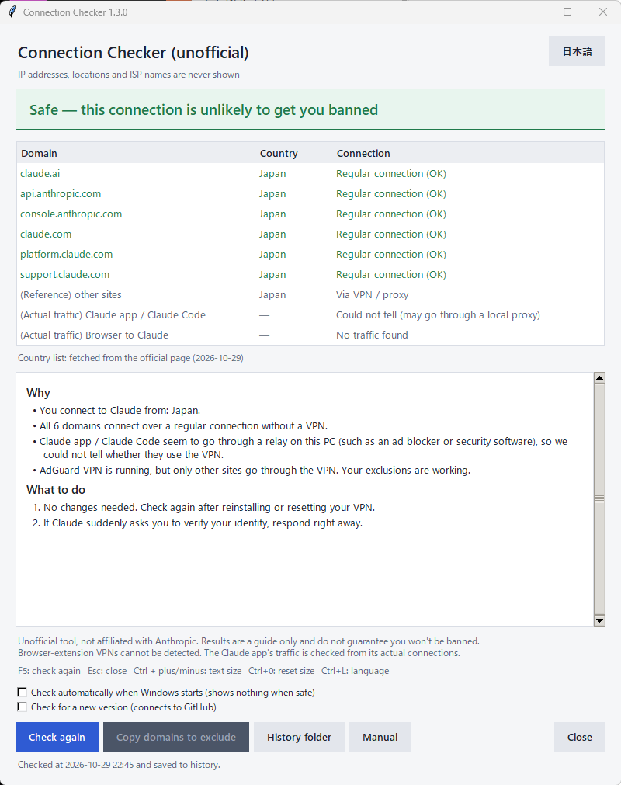

English · 日本語
A Windows 11 app that checks whether your connection to Claude looks risky to Anthropic: whether it goes through a VPN or data center network, and whether you connect from a supported country.
Unofficial tool. Not affiliated with Anthropic. Results are a guide only and do not guarantee that your account won't be banned. See Disclaimer.
No installation is needed. Keep 回線チェッカー.exe and the _internal folder together in the same place.
Use the button in the top-right corner to switch between Japanese and English. Your choice is remembered next time. If Windows is in dark mode, the app uses a dark theme too.

These cases also give "Caution": IPv4 and IPv6 take different routes; the two lookup services disagree; or the address could not be read the usual way and the result is an estimate.
| Key | Action |
|---|---|
F5 | Check again |
Esc | Close |
Ctrl + + / Ctrl + - | Make the text larger / smaller (0.8x to 1.6x) |
Ctrl + 0 | Reset the text size |
Ctrl + L | Switch between Japanese and English |
Turn on "Check automatically when Windows starts" at the bottom of the window and the app checks, without showing a window, every time you sign in. If everything is safe it shows nothing and exits. The window opens only for Caution or Danger, or when it could not connect. Right after startup the network may not be ready, so if it cannot connect it tries again every 20 seconds, up to 3 times.
Turn the box off to stop. This setting works with the exe.
Turn on "Check for a new version" and the app looks up the latest release on GitHub when it starts, and shows a notice at the top if there is a newer one. "Open download page" opens it in your browser. This setting is off by default.
The last two rows of the table show the result of looking at the actual connections of the Claude app / Claude Code running on your PC, and of your browser to Claude.
The app reads the list of connections on this PC and checks whether Claude's traffic leaves through a VPN's virtual adapter or through a regular adapter (wired LAN or Wi-Fi). This shows the real picture even when you exclude apps from the VPN.
| Shown | Meaning |
|---|---|
| Not through a VPN (OK) | Claude's traffic leaves through a regular adapter. |
| Goes through a VPN | It leaves through a VPN adapter. Your exclusion is not working or has not been set. The result becomes "Caution". |
| Partly through a VPN | Some connections take a different route. |
| No traffic found | The Claude app is not running or is not connected. |
| Could not tell (may go through a local proxy) | An ad blocker, security software or similar relays the traffic, so the outgoing connection was not visible. Rely on the other rows. |
Only TCP connections can be seen. Browser traffic over QUIC (which uses UDP) is not visible. For the browser, only connections to Claude's addresses are counted.
The connection list is read only for the check. It is never shown, saved or sent.
The app compares the result with the last one (last.json). If the result changed, it says so at the top of "Why". This helps you notice when, for example, reinstalling your VPN removed your exclusions.
The app checks using its own network traffic. In the cases below the result may not match Claude's real traffic.
NordVPN, ExpressVPN, Proton VPN and similar tools exclude whole apps rather than domains. If you excluded only the Claude app, this checker still goes through the VPN and may show “Danger”.
To get an accurate result, exclude 回線チェッカー.exe from the VPN together with the Claude app and your browser.
Since v1.3.0: the app also looks at the actual connections of the Claude app and Claude Code, so it can review the result even when you exclude apps from the VPN. If this checker goes through the VPN while the Claude app connects directly, "Danger" is lowered to "Caution" and the app explains why. See "Check the Claude app's own traffic" under Handy features.
VPNs that run as a browser extension only affect the browser. This app cannot see them, so it may show “Safe” even when Claude in the browser goes through a VPN. Turn the extension VPN off when you use Claude in the browser.
The app checks both IPv4 and IPv6. If IPv6 is not available it uses IPv4 only. If IPv4 goes through the VPN while IPv6 connects directly (or the other way round), it shows "IPv4 and IPv6 take different routes".
On networks that use an automatic proxy configuration (PAC file) the result may be “Could not check”. Do not change the settings of a VPN managed by your company or school; ask your administrator.
| VPN software | Exclusion type | Where to find it |
|---|---|---|
| AdGuard VPN | Domain | Exclusions → Add manually |
| Surfshark | Domain | VPN settings → Bypasser → Bypass websites and IPs |
| Windscribe | Domain | Preferences → Split Tunneling → Exclusive, then add hostnames |
| Cloudflare WARP | Domain | Preferences → Advanced → Split Tunnels |
| NordVPN | App | Settings → Split tunneling |
| ExpressVPN | App | Options → Split tunneling |
| Proton VPN | App | Settings → Split Tunneling |
Menu names can change between versions of the VPN software. For app-based tools, exclude the Claude app, your browser and 回線チェッカー.exe.
If your VPN says the domain name is invalid, there may be a space before or after it, or it may be typed in full-width characters. Clear the field and paste the name again in half-width characters.
If you can't fix it right away, turn the VPN off while you use Claude.
Your VPN server is in a country where Claude is not available. Switch to a supported country, or turn the VPN off. Switching countries often can also look suspicious.
Wait a moment and click Check again. If it keeps failing, an ad blocker (such as AdGuard) may be blocking the check. Turn it off temporarily and try again.
Each check adds one line to history.csv in the folder below. The History folder button opens it. You can open the file in Excel.
%LOCALAPPDATA%\KaisenChecker\history.csv
| Column | Content |
|---|---|
| Time | When the check ran |
| Result | Safe / Caution / Danger |
| Each domain | OK / VPN / Unsupported / Unknown |
| VPN software | Names of VPN software that was running |
| Windows proxy | On / Off |
IP addresses, locations and ISP names are never recorded. If the file is open in Excel it can't be saved to, so close it before checking again. Lines written while the app is in English use English words.
The same folder also holds your language setting (settings.json) and the last fetched country list (countries.json). Delete this folder as well when you remove the app.
The app is not code-signed, so Windows or your antivirus software may warn about it.
If the SHA-256 value on the download page matches the value of the zip file you downloaded, it has not been altered. You can check it in PowerShell:
Get-FileHash .\KaisenChecker_v1.3.0.zip -Algorithm SHA256
claude.ai, anthropic.com and claude.com are used; anything else is ignored.| Domain checked | Used for |
|---|---|
claude.ai | The Claude app and web version |
api.anthropic.com | Claude Code and the API |
console.anthropic.com | Developer console |
claude.com | Official website |
platform.claude.com | Claude Code sign-in and console |
support.claude.com | Support and appeals |
Anthropic does not publish its criteria. The result only shows whether anything looks suspicious.
| 回線チェッカー.exe | The app |
| _internal | Files the app needs to run (do not delete) |
| Manual_en.html | This manual (English) |
| 説明書.html | Manual (Japanese) |
| screen_en.png / 画面.png | Screenshots used in the manuals |
| 回線チェッカー取説.exe | Beginner's guide in Japanese and English (opens in your browser; follows the app's language) |
| README.md / LICENSE | Overview and license (MIT) |